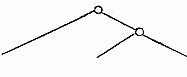
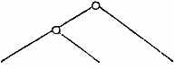

A false supposition, when the consequences proceeding from it are followed further and further, will sooner or later lead to absurdities and palpable contradictions. During the period of tormenting doubt—and this was by no means a short one—when the pointer of the scales oscillated before me in perfect uncertainty between the pro and the con, and when any fact leading to a quick decision would have been most welcome to me, I took no small pains to detect some such contradictions among the inferences as to the class of Crustacea furnished by the Darwinian theory. But I found none, either then, or subsequently. Those which I thought I had found were dispelled on closer consideration, or actually became converted into supports for Darwin’s theory.
Nor, so far as I am aware, have any of the necessary consequences of Darwin’s hypotheses been proved by any one else, to stand in clear and irreconcilable contradiction. And yet, as the most profound students of the animal kingdom are amongst Darwin’s opponents, it would seem that it ought to have been an easy matter for them to crush him long since beneath a mass of absurd and contradictory inferences, if any such were to be drawn from his theory. To this want of demonstrated contradictions I think we may ascribe just the same importance in Darwin’s favour, that his opponents have attributed to the absence of demonstrated intermediate forms between the species of the various strata of the earth. Independently of the reasons which Darwin gives for the preservation of such intermediate forms being only exceptional, this last mentioned circumstance will not be regarded as of very great significance by any one who has traced the development of an animal upon larvae fished from the sea, and had to seek in vain for months, and even years, for those transitional forms, which he nevertheless knew to be swarming around him in thousands.
A few examples may show how contradictions might come forth as necessary results of the Darwinian hypotheses.
It seems to be a necessity for all crabs which remain for a long time out of the water (but why is of no consequence to us here), that air shall penetrate from behind into the branchial cavity. Now these crabs, which have become more or less estranged from the water, belong to the most different families—the Raninidæ (Ranina), Eriphinæ (Eriphia gonagra), Grapsoidæ (Aratus, Sesarma, etc.), Ocypodidæ (Gelasimus, Ocypoda), etc., and the separation of these families must doubtless be referred to a much earlier period than the habit of leaving the water displayed by some of their members. The arrangements connected with aerial respiration, therefore, could not be inherited from a common ancestor, and could scarcely be accordant in their construction. If there were any such accordance not referable to accidental resemblance among them, it would have to be laid in the scale as evidence against the correctness of Darwin’s views. I shall show hereafter how in this case the result, far from presenting such contradictions, was rather in the most complete harmony with what might be predicted from Darwin’s theory.
Fig. 1. Melita exilii n. sp., male, enlarged. The large branchial lamellæ are seen projecting between the legs.
A second example.—We are already acquainted with four species of Melita (M. valida, setipes, anisochir, and Fresnelii), and I can add a fifth (Fig. 1), in which the second pair of feet bears upon one side a small hand of the usual structure, and on the other an enormous clasp-forceps. This want of symmetry is something so unusual among the Amphipoda, and the structure of the clasp-forceps differs so much from what is seen elsewhere in this order, and agrees so closely in the five species, that one must unhesitatingly regard them as having sprung from common ancestors belonging to them alone among known species. But one of these species, M. Fresnelii, discovered by Savigny, in Egypt, is said to want the secondary flagellum of the anterior antennae, which occurs in the others. From the trustworthiness of all Savigny’s works there can scarcely be a doubt as to the correctness of this statement. Now, if the presence or absence of the secondary flagellum possessed the significance of a distinctive generic character, which is usually ascribed to it, or if there were other important differences between Melita Fresnelii and the other species above-mentioned, which would make it seem natural to separate M. Fresnelii as a distinct genus, and to leave the others united with the rest of the species of Melita—that is to say, in the sense of the Darwinian theory, if we assume that all the other Melitæ possessed common ancestors, which were not at the same time the ancestors of M. Fresnelii—this would stand in contradiction to the conclusion, derived from the structure of the clasp-forceps, that M. Fresnelii and the four other species above-mentioned possessed common ancestors, which were not also the ancestors of the remaining species of Melita. It would follow—
| From the structure of the clasp-forceps: | From the presence or absence of the secondary flagellum. |
|  |  |
| M. palmata, etc., M. exilii, etc., M. Fresnelli. | M. palmata, etc., M. exilii, etc., M. Fresnelii. |
As, in the first case, among the Crabs, a typical agreement of arrangements produced independently of each other would have been a very suspicious circumstance for Darwin’s theory, so also, in the second, would any difference more profound than that of very nearly allied species. Now it seems to me that the secondary flagellum can by no means furnish a reason for doubting the close relationship of M. Fresnelii to M. exilii, etc., which is indicated by the peculiar structure of the unpaired clasp-forceps. In the first place we must consider the possibility that the secondary flagellum, which is not always easy to detect, may only have been overlooked by Savigny, as indeed Spence Bate supposes to have been the case. If it is really deficient it must be remarked that I have found it in species of the genera Leucothoë, Cyrtophium and Amphilochus, in which genera it was missed by Savigny, Dana and Spence Bate—that a species proved by the form of the Epimera (coxæ Sp. B.) of the caudal feet (uropoda Westw.), etc., to be a true Amphithoë1 possesses it—that in many species of Cerapus it is reduced to a scarcely perceptible rudiment—nay, that it is sometimes present in youth and disappears (although perhaps not without leaving some trace) at maturity, as was found by Spence Bate to be the case in Acanthonotus Owenii and Atylus carinatus, and I can affirm with regard to an Atylus of these seas, remarkable for its plumose branchiæ—and that from all this, at the present day when the increasing number of known Amphipoda and the splitting of them into numerous genera thereby induced, compels us to descend to very minute distinctive characters, we must nevertheless hesitate before employing the secondary flagellum as a generic character. The case of Melita Fresnelii therefore cannot excite any doubts as to Darwin’s theory.
1. I accept this and all the other genera of Amphipoda here mentioned, with the limits given to them by Spence Bate (‘Catalogue of Amphipodous Crustacea’).